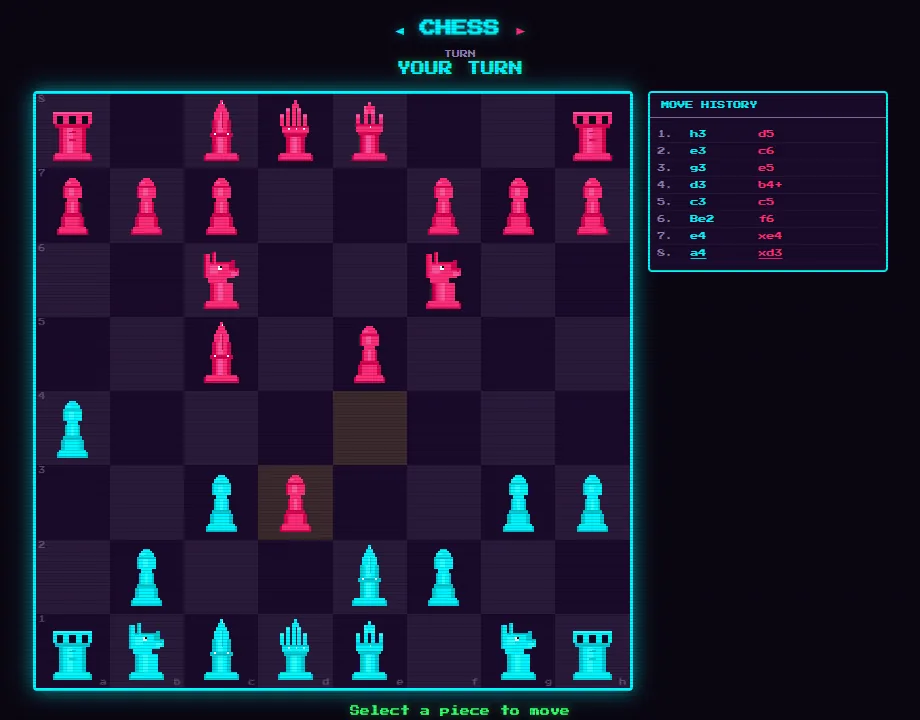
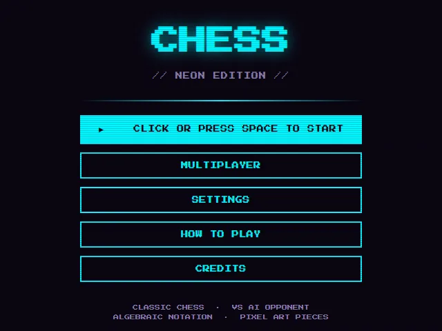
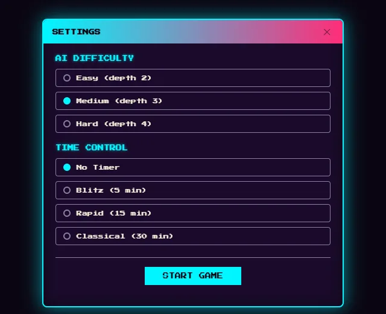

neon edition · three difficulty levels · blitz to classical
Chess in the arcade's neon edition, cyan against magenta in pixel art under CRT scanlines.
Play the computer at easy, medium or hard, with no clock or a blitz, rapid or classical one, or play a friend online with chat. Moves are kept in algebraic notation.


pipx install magmacrunch-chessgame by magmacrunch media